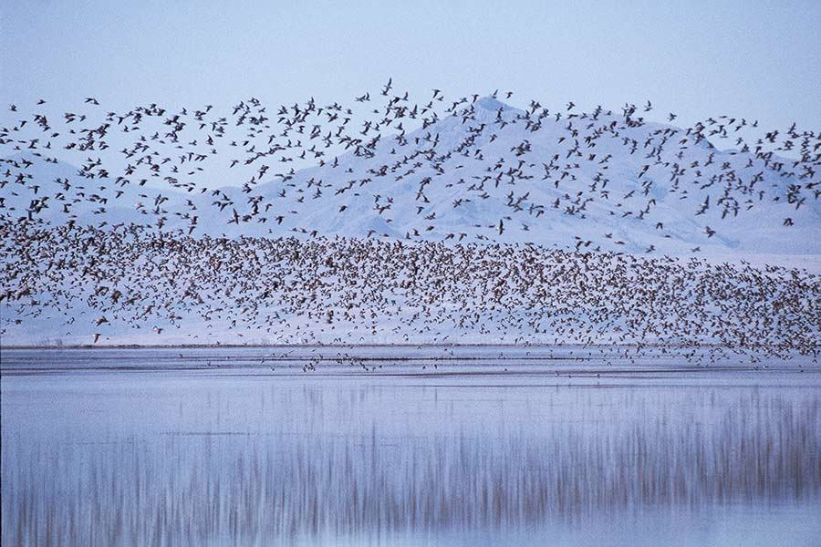
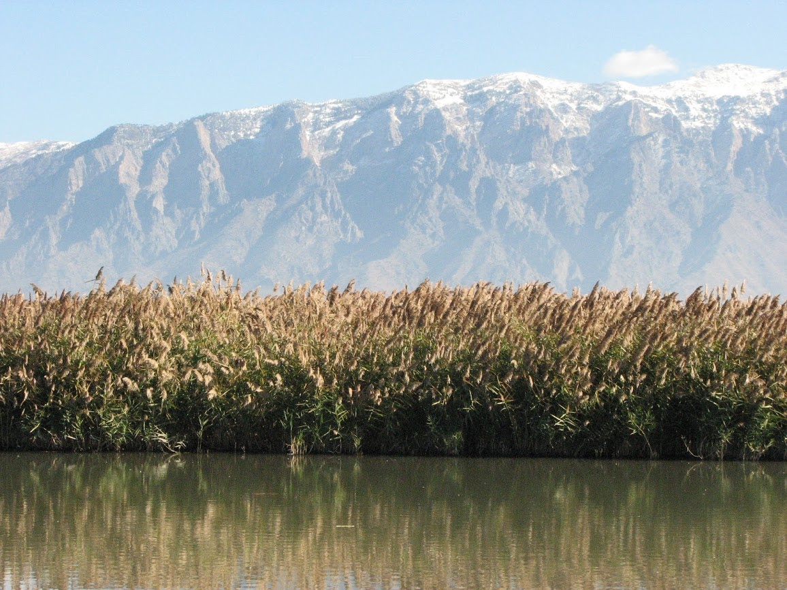

← Back to Blog
The Great Salt Lake has existed for thousands of years, in the northwest corner of Utah. Formed as a remanent of Lake Bonneville, it receives water from several different rivers flowing throughout the state. Over time, the lake has gradually become a unique body of water crucial to the region. Today, it holds a special place in the region’s ecosystem, interacting with life, communities, and the environment. Depending on where you are, you may have hear of the Great Salt Lake as a super salty body of water, one of the saltiest in the entire world. To be specific, the Great Salt Lake is hypersaline environment, meaning it has an extremely high concentration of salt, far exceeding that of the ocean. While the high salt concentrations mean most aquatic life can’t survive in the water, it does not mean that the lake has no life. On contrary, the lake supports a very unique ecosystem that can’t be found anywhere else. Countless organisms rely on or use the lake for survival. The salty environment supports halophilic organisms that have adapted to its conditions. While creatures found elsewhere cannot survive in the environment, the organisms that do live there have evolved specialized mechanisms to adapted to the special ecological niches of the lake. But, as you may have also heard, the lake is shrinking.
Water levels have been dropping for decades, and this depletion isn’t just a local problem. So why should we care about it? Well, lake drying up isn’t the only issue, but rather has a large impact on the entire ecosystem and all the life that depend on it. Once those are taken into account, the Great Salt Lake may become more important more than you think. As water levels are reach historical lows in recent years and the ecosystem and all the unique organisms face the crisis of disappearing, the problem becomes extremely huge.
Why Is the Great Salt Lake So Important?
The Great Salt Lake an ecological hotspot. Millions of birds, from hundreds of different species, migrate across the Pacific Flyway and stop at by the lake to rest every year. These birds use the surrounding lands to rest their body and find food, like brine shrimp or brine flies, to replenish their energy as fat reserves before continuing their journey. Although the lake is only temporarily stop for the birds, it is an extremely important support for them. To these tens of millions of birds, the lake is a necessary stop to recover their condition and allow them to continue their journey. If they can’t rest by the lake, they won’t be able to survive their journey. But now, as the lake water shrinks, the birds are losing those very habitats they depend on.
But birds aren’t the only thing that depend on the lake. The lake ecosystem is home to many other organisms that thrive in the lake’s salt levels. Brine shrimp and brine flies are just some of the most prominent residents of the lake habitat. They are the food source of these migratory birds. While they may seem as insignificant organisms, don’t let their tiny size deceive their influence. These tiny creatures are the foundation of the entire lake’s food web.
How Is Water Depletion Affecting Wildlife?
As the water in the Great Salt Lake depletes, wildlife that depends on the lake find it harder and harder to survive.
Brine Shrimp and Brine Flies
Brine shrimp are a big deal for the lake ecosystem, but it may surprise you to find that they are also a also big deal for the local economy. The local aquaculture industry also harvests these shrimps to make fish food, thus supporting the economy. Of course, their most important role is still in the lake’s food web. In the Great Salt Lake, brine shrimps are a keystone species in the food web and support the entire ecosystem. They are primary consumers that feed on algae and other microorganisms like phytoplankton. When they are eaten by birds and other predators’ energy can be transferred up the food chain. Without them, the entire ecosystem would collapse. However, as the lake shrinks, it is becoming more and more likely that they are going to disappear. The declining water levels, means the salinity of the lake rises. Brine shrimp are adapted to the high salinity levels of the lake, due to osmotic regulation and specialized ion channels that allow them to maintain a balanced internal salt level. However, when the salt concentrations become too high, their populations suffer. The shrimp can’t reproduce at exceedingly high salinity and the high salinity also affects some enzymatic function and cellular processes causing their population to drops.
Brine flies are the other keystone species in the lake ecosystem. They too are consumed by visiting birds. Their larvae feed on microbial mats underwater, but decreasing water levels also expose these mats to air and cause them to dry out. This causes the flies lose their breeding grounds and numbers. Fewer brine flies also mean less food for the birds.
Migratory Birds Are Losing Their Habitat

Migratory birds depend on the Great Salt Lake's wetlands for rest and food.
With the lake’s shorelines are retreating, wetland areas also dry up. Migratory birds including the American avocet, Western sandpipers, and California gulls use these wetland areas to rest and find food. In their migration, they use their stored energy reserves in the form of fat. The lake is a place for them to rest and replenish their energy. With the loss of wetland areas, the birds have less places to rest and prepare for the next stage of their migration journey. If the lake doesn’t support enough brine shrimp and brine flies, the birds find it even harder to find food and replenish their energy and build enough reserves to keep going. Without enough food, the birds become too weak to make the next part of their journey. Many more die because of this, and those that survive might have less offspring. Entire bird populations could decline as a result of the Great Salt Lake’s decline.
What’s Happening to Other Species?
These effects don’t affect brine shrimp, flies, and birds, but reach out to the ecosystem itself.
Aquatic Life Is Struggling
Many species adapted to the Great Salt Lake environment cannot adapt to the rapid changes in the environment. Many of the lake’s fish and microorganisms already struggle to survive in the lake abnormally saline conditions, but can still manage to adapt. However, as the as the rate of evaporation begins to far exceed the replenishing, the increasingly salty conditions are surpassing these species limits. This continues the chain reaction as microorganisms that break own organic matter that enters the lake become negatively affected as the lake becomes less habitable. This then affects nutrient cycling and damages the lake’s ability to support life.
Plant Life and the Shoreline Are in Danger

Wetland plants along the Great Salt Lake shoreline face increasing salinity and habitat loss.
Plants and other wetland vegetation like Saltgrass also struggle to survive in the collapsing ecosystem. These plants are generally halophytic, with adaptations to survive in saline environments through salt glands to excrete or compartmentalize salt. They face problems as the shrinking lake increases salinity too far, dry up habitats, expose toxic dust and soil, and allows the introduction of invasive competitor plants. This further exacerbates the problem as plants help prevent soil erosion by the shoreline. Their roots bind the soil, keeping it stable. Without these plants, the soil will erode, causing even further habitat loss. This is just another link in the ecosystem collapsing chain effect caused by water depletion.
What’s Being Done to Help the Great Salt Lake?
While the situation seems grim, and really is problematic, there are ongoing conservation efforts working to improve the situation. Organizations like the Utah Division of Wildlife Resources are working to monitor wildlife populations and protect these habitats and policy makers are discussing recovery solutions to restore the lake’s water along with the species in the ecosystem.
However, this task faces many difficulties. Utah is a cold desert, with minimal rainfall and water, but many sectors that all use the limited supply. Especially as climate change contribute to increasingly harsh conditions and drought, water becomes an extremely scarce resource. Fortunately, it is not too late. The water problem at the lake is receiving attention, but it is imperative to take action now before the situation deteriorates. If we don’t, the we risk the complete collapse of Great Salt Lake’s ecosystem that supports millions of migratory birds, specialized organisms, and is completely interconnected with the region.
How the Great Salt Lake Connects Globally
The Great Salt Lake influence exceeds its own environment. It is a part of a larger ecological system spanning North America and even further regions. Therefore, its decline devastates biodiversity, migratory bird species, environment health in other locations.
Not just the Great Salt Lake. Many other bodies of water similarly face dire circumstances. Water depletion in the Great Salt Lake is not an isolated case, but rather a ubiquitous problem faced in many parts of the world as climate changes and humans use more water. As water bodies receive less water due to these reasons and inflow exceeds outflow, they shrink. Without a place for minerals to go, salinity also increases. The Aral Sea in Central Asia, Lake Urmia in Iran, and so many more have and are presently facing similar challenges. To protect all of these rivers and lakes that support countless lives, from humans to animals, we need to view water with the intent to protect our ecosystems.
Sources